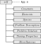

Initialization module#
CT built-in functions are written to perform fast parametric studies, thus the data passed between the functions has been organized in a hierarchical tree structure (except for the GUI which is based on OOP) as shown in Fig.1, namely:
self (App): parent node; contains all the data of the code, e.g., databases, input values, results.Constants (C): contains constant values.Elements (E): contains data of the chemical elements in the problem (names and index for fast data access).Species (S): contains data of the chemical species in the problem (names and index for fast data access), as well as lists (cells) with the species for a complete combustion.Problem Description (PD): contains data of the problem to solve, e.g., initial mixture (composition, temperature, pressure), problem type and its configuration.Problem Solution (PS): contains results (mixtures).Tuning Properties (TN): contains parameters to control the numerical error of the numerical methods implemented in the different modules.Miscellaneous (Misc): contains values to configure the auto-generated plots and export setup, as well as flags, e.g., settingFLAG_RESULTS = true(by default) the results are shown in the command window (only in the desktop environment).

Figure 1: Combustion Toolbox hierarchical data tree structure, where App.m is the initialization function.
App#
Routines to initialize the Combustion Toolbox.
Routines
- App(varargin)#
Generate self variable with all the data required to initialize the computations
- Optional Args:
LS (cell): List of species
obj (class): Class combustion_toolbox_app (GUI)
type (str): If value is fast initialize from the given Databases
DB_master (struct): Master database
DB (struct): Database with custom thermodynamic polynomials functions generated from NASAs 9 polynomials fits
- Returns:
self (struct) – Data of the mixture (initialization - empty), conditions, and databases
- contained_elements(self)#
Obtain containted elements from the given set of species (reactants and products)
- Parameters:
self (
struct) – Data of the mixture, conditions, and databases- Returns:
self (struct) – Data of the mixture, conditions, and databases
- initialize(self)#
- This routine has three tasks:
Check that all species are contained in the Database
Establish cataloged list of species according to the state of the phase (gaseous or condensed). It also obtains the indices of cryogenic liquid species, e.g., liquified gases
Compute Stoichiometric Matrix
- Parameters:
self (
struct) – Data of the mixture, conditions, and databases- Returns:
self (struct) – Data of the mixture, conditions, and databases
- set_DB(self, FLAG_REDUCED_DB, FLAG_FAST)#
Generate Database with custom polynomials from DB_master
- Parameters:
self (
struct) – Data of the mixture, conditions, and databasesFLAG_REDUCED_DB (
bool) – Flag compute from reduced databaseFLAG_FAST (
bool) – Flag load databases
- Returns:
self (struct) – Data of the mixture, conditions, and databases
Constants#
Routines to initialize the Constants branch in the self variable (struct).
Routines
- Constants()#
Initialize struct with constants data
- Returns:
self (struct) – struct with constants data
Elements#
Routines to initialize the Elements branch in the self variable (struct).
Miscellaneous#
Routines to initialize the Miscellaneous branch in the self variable (struct).
Routines
- Miscellaneous()#
Initialize struct with miscellaneous data
- Returns:
self (struct) – struct with miscellaneous data
ProblemDescription#
Routines to initialize the ProblemDescription branch in the self variable (struct).
Routines
- ProblemDescription()#
Initialize struct with problem description data
- Returns:
self (struct) – struct with problem description data
ProblemSolution#
Routines to initialize the ProblemSolution branch in the self variable (struct).
Routines
- ProblemSolution()#
Initialize struct with problem solution data
- Returns:
self (struct) – struct with problem solution data
Species#
Routines to initialize the Species branch in the self variable (struct).
Routines
- Species()#
Initialize struct with problem solution data
- Returns:
self (struct) – struct with problem solution data
- get_index_ions(species)#
Get index of ions for the given list of species
- Parameters:
species (
str) – List of species- Returns:
index (float) – Index of ions
- list_species(varargin)#
Set list of species in the mixture (reactants and products)
- Predefined list of species:
SOOT FORMATION (default)
COMPLETE
HC/O2/N2 EXTENDED
SOOT FORMATION EXTENDED
NASA ALL
NASA ALL CONDENSED
NASA ALL IONS
AIR, DISSOCIATED AIR
AIR IONS, AIR_IONS
IDEAL_AIR, AIR_IDEAL
HYDROGEN
HYDROGEN_L, HYDROGEN (L)
HC/O2/N2 PROPELLANTS
SI/HC/O2/N2 PROPELLANTS
- Parameters:
empty (
none) – return default list of species (soot formation)
- Optional Args:
self (struct): Data of the mixture, conditions, and databases
LS (cell): Name list species / list of species
EquivalenceRatio (float): Equivalence ratio
EquivalenceRatio_soot (float): Equivalence ratio in which theoretically appears soot
- Returns:
self (struct) – Data of the mixture, conditions, and databases
TuningProperties#
Routines to initialize the TuningProperties branch in the self variable (struct).
Routines
- TuningProperties()#
Initialize struct with tunning properties attributes
- FLAG_FAST#
Flag indicating use guess composition of the previous computation (default: false)
- Type:
bool
- itMax_gibbs#
Max number of iterations - Gibbs/Helmholtz minimization method (default: 70)
- Type:
float
- itMax_ions#
Max number of iterations - charge balance (ions) (default: 30)
- Type:
float
- tolN#
Tolerance of the Gibbs/Helmholtz minimization method (default: 1e-14)
- Type:
float
- tolE#
Tolerance of the mass balance (default: 1e-06)
- Type:
float
- tol_pi_e#
Tolerance of the dimensionless Lagrangian multiplier - ions (default: 1e-04)
- Type:
float
- tol0#
Tolerance of the root finding algorithm (default: 1e-03)
- Type:
float
- root_method#
Method for root finding (default: newton)
- Type:
function
- itMax#
Max number of iterations - root finding method - HP, EV, SP, SV (default: 30)
- Type:
float
- root_T0_l#
First guess T [K] left branch - root finding method (default: 1000)
- Type:
float
- root_T0_r#
First guess T [K] right branch - root finding method (default: 3000)
- Type:
float
- root_T0#
Guess T[K] if it’s of previous range - root finding method (default: 3000)
- Type:
float
- tol_shocks#
Tolerance of shocks routines (default: 5e-05)
- Type:
float
- it_shocks#
Max number of iterations - shocks and detonations (default: 50)
- Type:
float
- Mach_thermo#
Preshock Mach number above which T2_guess will be computed considering h2 = h1 + u1^2 / 2 (default: 2)
- Type:
float
- tol_oblique#
Tolerance oblique shocks (default: 1e-03)
- Type:
float
- it_oblique#
Max number of iterations - oblique shocks (default: 20)
- Type:
float
- N_points_polar#
Number of points to compute shock polar (default: 100)
- Type:
float
- it_guess_det#
- Type:
float
- tol_rocket#
Tolerance rocket performance (default: 1e-04)
- Type:
float
- it_rocket#
Max number of iterations - rocket performance (default: 10)
- Type:
float
- Returns:
self (struct) – struct with tunning properties data